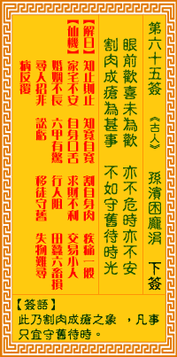

观音灵签第六十五签 【孙膑困庞涓】 |
 | |||
眼前欢喜未为欢 危不危兮安不安 割肉成疮因甚事 不如守旧待时来 |
||||
| 【吉凶】 | 下下签 | 【宫位】 | 卯宫 | |
| 【签语】 | 此卦割肉成疮之象，凡事只宜守旧待时。 | |||
| 【解曰】 | 知止则止 知宽自宽 割自身肉 疾痛一般 | |||
| 【仙机】 | 此签家宅不安，自身口舌，求财不利，交易小人，婚姻不长，六甲有惊，行人阻，田蚕六畜损，寻人招非，讼亏，移徙守旧，失物难寻， 病反覆。 | |||
| 【详解】 | 眼前的欢喜不见得是真欢喜，祸福安危实在难以论定;到底为了什么事情要让自己受创?还不如安份守己才是上策啊。 得止且止，知欢且欢，割自己肉，痛本一般。此签割肉成疮之象，凡事守旧待时。 本签者。割肉成疮之象者。凡事必须守旧待时。不宜轻举妄动也。因时命之注定君尔之命眼欢喜未为欢。危不危兮安不安。日下运多拂逆。毫无利息可言。如百花 凋落。无复荣华之望。几希万事皆空之势。易言之。如得止。且止知欢割自己肉痛本一般。 此签有”自作主张”之意。奉劝当事人，不要太固执。人很主观，有时心里已经有主意的事，虽然可能还是会找大家商议，但纵使多半的人持反对或劝阻之意，却 依然我行我素、执意照自己的意思去做，结果往往不如预期，甚至导致一败涂地。须知很多时候我们对事情的看法不见得都能面面俱到，多少会有遗漏或误判之处 。因此对于旁人的善意提醒或规劝，应有雅量去接受，虚心检讨并加以改正。所谓”人非圣贤，熟能无过?”就算已经犯下了过失，但只要勇于认错，相信大家仍 然会接纳、帮助你，让事情不致于到无法收拾的地步。 | |||
| 【典故】 | 孙膑为了要报被庞涓削了双足之仇，到了齐国，领兵攻打魏国的庞涓。双方交战后，孙膑佯作败退，引诱庞涓进入幽谷，当晚庞涓进入幽 谷，道路狭窄，两旁多阻隘，庞涓被困其中，到了马陵，孙膑军队夹道埋伏，并且万箭齐发，大败魏军，庞涓无路可逃，自知大势已去，就在大树下自杀身亡。东周列国志。 | |||